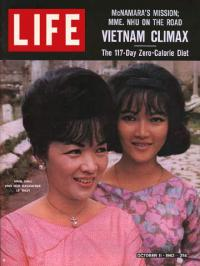
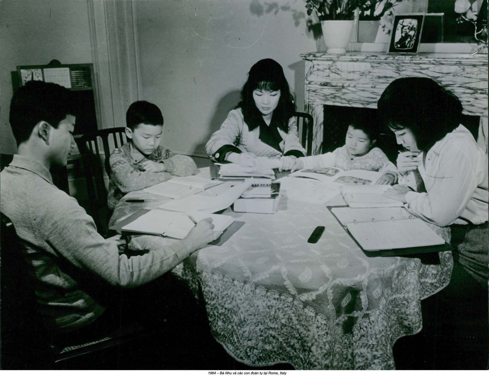
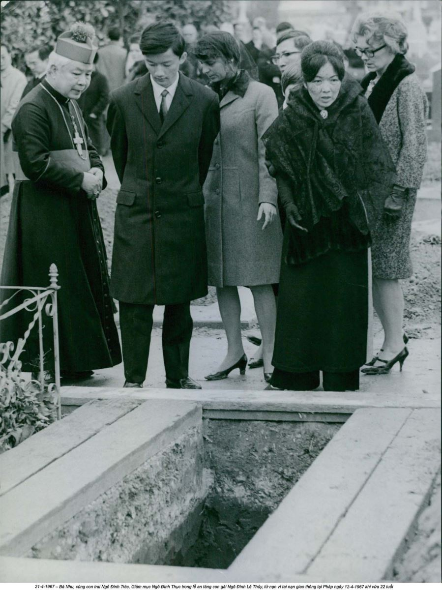
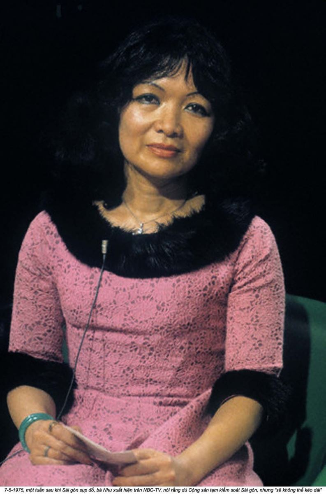

Chương 16

à Nhu và con gái vẫn còn nán lại ở California qua những ngày khủng khiếp đầu tiên sau vụ đảo chính. Ba đứa trẻ kia đã đến Rome, nhưng bà Nhu vẫn chưa thể theo chúng. Bà không thể chấp nhận được những tin tức đến từ Nam Việt Nam nói rằng ông Diệm và ông Nhu đã chết và quân đội đã kiểm soát chính quyền. Bà Nhu vẫn hy vọng vào một dấu hiệu nào đó cho thấy chồng bà và anh rể bà vẫn còn sống. Một cái chết ngụy tạo có thể là một phần trong những mưu tính tài tình của chồng bà. Những tấm ảnh chụp hai thi thể đổ gục không thuyết phục được bà. Hai cái xác đó bị dập nát quá mức để có thể nhận diện. Bà sẽ mất thêm ba năm nữa để hoàn toàn chấp nhận cái chết của họ và chấp nhận rằng bà sẽ không bao giờ còn là Đệ nhất Phu nhân của Việt Nam Cộng hòa nữa. Trong những ngày sau đảo chính, bà Nhu dựa vào sự tức giận và phẫn nộ để tiếp tục sống.

Vào ngày 5 tháng Mười Một, bốn ngày sau đảo chính, bà tổ chức họp báo tại một phòng cách xa sảnh khách sạn Beverly Wilshire. Bà Nhu mang kính đen, một chuỗi ngọc đơn giản, và chiếc áo dài sáng dịu, mà màu sắc của nó được nhà thơ Lawrence Goldstein mô tả là “màu của ánh trăng”.
Giọng bà Nhu như nghẹn lại khi bà cố gắng đọc một bài phát biểu chuẩn bị sẵn. “Bất cứ ai có người Mỹ là đồng minh thì không cần kẻ thù nào nữa”. Bà cáo buộc Hoa Kỳ phải nhận trách nhiệm về vụ đảo chính và, vò cái khăn giấy, trấn tĩnh đủ để đưa ra một lời dự báo kỳ dị: “Tôi có thể nói trước với các bạn rằng câu chuyện ở Việt Nam chỉ mới bắt đầu”.
Cha bà, ông Trần Văn Chương, người đã không lúc nào chịu gặp bà trong chuyến đi dài cả tháng của bà đến Hoa Kỳ, leo cầu thang hậu lên phòng suite khách sạn của bà Nhu ở tầng tám. Cha và con gái gặp lại nhau trong khung cảnh riêng tư, và sau đó ông Chương nói với báo chí rằng không có “nhu cầu phải hòa giải”; họ đã xếp qua một bên những khác biệt khi cùng nhìn vào thảm kịch. Bà Nhu kể cho Clare Booth Luce một câu chuyện hoàn toàn khác, và đáng tin hơn nhiều. Cha bà đến thăm bà, bà nói, vì ông muốn trở về Việt Nam tham gia chính phủ mới, nhưng rõ ràng ông không thể làm điều đó mà không được sự cổ vũ của con gái. Không, ngay cả khi ông Chương có thể xoay xở nói về cách thức vượt qua xì-căng-đan chính trị loại đó. Ồng không thể đơn giản gia nhập vào lực lượng của những người đã giết con rể ông mà không có vài lời giải thích hoặc sự giúp đỡ của bà Nhu. Ông đến khách sạn của bà ở Beverly Wilshire để hỏi liệu ông có thể nói với công chúng rằng người con gái góa chồng của ông đã tha thứ cho ông.
Nhưng bà Nhu không làm một việc như thế. Bà sẽ không tha thứ cho ông vì đã bỏ rơi chế độ hồi tháng Tám, và bà sẽ không tha thứ cho ông vì đã không tiếp bà và Lệ Thủy ở thềm nhà ông. Bà sẽ không bao giờ, không bao giờ tha thứ cho ông hoặc mẹ bà vì đã khiến tuổi thơ của bà, đứa con gái thứ bị bỏ bê, khốn khổ đến vậy.
Có lẽ bà Nhu biết rằng ông Chương và vợ ông đã làm xói mòn chính phủ ông Diệm trong nhiều năm, nhưng có thể bà không biết tất cả chi tiết. Wesley Fishel, người đứng đầu Nhóm Cố vấn Việt Nam của Đại học Michigan State về sau chỉ còn tư vấn cho chế độ ông Diệm, trở thành bạn thân của ông Diệm trong những năm đầu nhiệm kỳ Tổng thống của ông. Nhóm của ông khuyên bảo mọi thứ từ hành chính công và nhân sự đến kinh tế học và các quyết định thương mại, và nhiều đề xuất của họ đã định hình nên cách điều hành quốc gia của ông Diệm. Nhưng dường như ông Diệm không nói gì nhiều khi trả lời lá thư chân thành của Fishel năm 1960, một lời cảnh báo về “những tham vọng [rõ ràng] muốn leo lên vị trí cao hơn” của ông Chương. Fishel bảo ông Diệm rằng ông Chương “gần như thành công trong việc phá hoại tổ chức những người bạn của ngài ở Mỹ” từ giây phút ông ta đến Washington với tư cách đại sứ.(1) Không ai có thể trả lời tại sao ông Diệm giữ ông Chương ở lại, nhưng ít nhất sau đảo chính bà Nhu có thể cảm thấy ít nhiều an ủi khi biết rằng cha mẹ bà sẽ không giành được lợi ích gì từ sự phản bội của họ. Vụ đảo chính mà cha mẹ bà góp phần đặt nền tảng sẽ bắt họ phải sống cuộc sống lưu đày.
Bà Nhu không thể biết rằng cuộc sống của họ sẽ kết thúc vì bị sát hại hai mươi ba năm sau. Bà không thể biết rằng đứa con trai cưng quí mà vì nó họ đã bỏ rơi bà sẽ là người giết họ. Những vở kịch Shakespeare mà cả đời ông Chương rất thích lắng nghe, những chuyện kể về sự điên rồ, phản trắc, bi kịch gia đình, và báo thù, khi nhìn lại đều là những chuyện kể báo trước định mệnh của ông.
Đột nhiên bà Nhu thấy mình có những lo lắng thực tế - như tiền bạc. Phòng khách sạn của bà tốn 98 đô một đêm. Một người gần gũi với bà Nhu tiết lộ với tờ New York Times rằng bà đến Hoa Kỳ với 5.000 đô tiền mặt cho một chuyến đi dự kiến ba tuần. Người đó cũng thì thầm rằng gia tài của bà ở Nam Việt Nam đã được thổi phồng - tất cả tiền bạc đều chạy vào quỹ của đảng chính trị của chồng bà. Không có tiền tiết kiệm và chỉ có một ít cổ phần nước ngoài. “Tiền bạc chắc chắn là một mối lo”, người thân cận đó nói riêng với New York Times. Trong khi liệt kê những việc phải làm sau đảo chính, bà Nhu tiếp tục mắc nợ - và bà không còn chính phủ để gởi hóa đơn tính tiền về. Allen Chase, nhà kinh doanh tài chính ngụ ở cuối con đường riêng dài quanh co chạy vào tận nhà, để nghị bà trả phòng khách sạn để đến làm khách của ông. Chase và vợ ông để bà Nhu sử dụng phòng ngủ của họ trong khi họ dời ra phòng khách.
James McFadden, chủ tạp chí bảo thủ National Review, là một trong số ít người đến thăm bà Nhu, và báo chí tường thuật rằng bà đã thương thảo với các nhà xuất bản và giới làm phim, dù đang ở Los Angeles, để bàn về việc bán câu chuyện của bà. Nhưng giá trị lớn nhất của bà Nhu có thể được nhìn ra nếu bà ở lại Hoa Kỳ đủ lâu để gây ảnh hưởng đến năm bầu cử sắp tới. Trong một cuộc trò chuyện qua điện thoại, Clare Booth Luce và Richard Nixon chia sẻ cảm tưởng rằng bà Nhu thực sự có khả năng gây tổn hại cho Tổng thống Kennedy. Luce nói với Nixon bà tin chắc “Jack Kennedy muốn có một nền hòa bình qua thương thuyết!” và một khi người Mỹ nhận ra những ý định thật của ông, một Việt Nam Cộng hòa trung lập, ông sẽ không được bầu lại. Bà Nhu, người góa phụ đang khổ đau, “vẫn là một khuôn mặt bí ẩn”.
Nhưng rốt cuộc bà Nhu không có chọn lựa thực sự nào. Bà không có tiền, và những người bạn phe Cộng hòa cũng không thể giúp đỡ bà mãi. Bà để lại một nửa hóa đơn 1.000 đô chưa thanh toán ở khách sạn Beverly Wilshire, và bà rời Hoa Kỳ đến Rome để được đoàn tụ với ba người con của mình. Trước khi đi, bà Nhu đọc bài phát biểu từ biệt ở sân bay. “Giu-đa đã bán Giê-su để đổi lấy 30 đồng tiến vàng. Anh em nhà họ Ngô đã bị bán chỉ vì vài đô la”.
Trong khi bà Nhu đổ trách nhiệm cho Hoa Kỳ về vụ đảo chính, những người khác cũng đổ tội cho bà. Tổng thống John F. Kennedy không phải là người duy nhất đổ lỗi cho bà Nhu về vụ đảo chính ở Sài Gòn. Viên chức Sở Thông tin Hoa Kỳ Everett Bumgardener gọi bà Nhu là “điểm va chạm” giữa người Mỹ và chế độ họ Ngô. Bà lập ra “đủ thứ mà tôi nghĩ là tai hại đối với chính quyền ông Diệm để rồi cuối cùng dẫn đến sự suy sụp của ông”.(2) Sử gia về Việt Nam Joseph Buttinger cũng không nhẹ nhàng hơn trong công trình lịch sử hai tập của ông về Chiến tranh Việt Nam: Ông mô tả bà Nhu như hòn đá tròng trên cổ người chết đuối.(3)
Nhưng rốt cuộc, bà Nhu đúng về nhiều chuyện mà bà không bao giờ nhận được lời khen. Bà đúng khi nói rằng hàng triệu đô la đổ vào Nam Việt Nam gây tổn hại cũng nhiều như giúp ích trong cuộc chiến chống Cộng sản. Sự “Mỹ hóa” Việt Nam Cộng hòa đã khiến nhiều người quốc gia hướng đến Cộng sản, những người cảnh báo rằng chủ nghĩa tư bản chỉ che đậy ý định thực dân của Mỹ. Bà Nhu từng nói rằng người Mỹ đang mưu tính chống lại chế độ này, và thực vậy, từ vị đại sứ ở Sài Gòn đến Tổng thống ở Nhà Trắng, họ đang làm vậy. Về việc Cộng sản “đầu độc” các tín đồ Phật giáo - chà, bà cũng lại đúng về chuyện đó. Các nguồn tin Cộng sản sau chiến tranh tiết lộ rằng các đặc vụ của họ thực sự đã xâm nhập vào Phật giáo và thúc đẩy cuộc nổi dậy mùa hè năm 1963. Bằng cách loại bỏ ông Diệm, người Mỹ hình như đã mắc mứu Cộng sản.
Bà Nhu cũng buộc tội báo chí đã bị Cộng sản “đầu độc”, và một lần nữa bà đúng. Sau chiến tranh, một người đàn ông Việt Nam tên là Phạm Xuân Ẩn được chính quyền Hà Nội phong danh hiệu Anh hùng Lực lượng Vũ trang, tặng thưởng bốn huân chương quân công, và thăng cấp lên thiếu tướng Quân đội Nhân dân Việt Nam. Ông Ẩn từng là điệp viên của Bắc Việt. Ông từng làm việc cho Reuters, Time, Christian Science Monitor, và New York Herald Tribune. Những người như David Halberstam của New York Times, Charlie Mohr của tạp chí Time, Robert Shaplen của New Yorkers, và ngay cả Stanley Karnow, tác giả của cuốn sách nhiều thẩm quyền Vietnam: A History, đã tìm đến ông Ẩn như một nguồn thông tin và nhà phân tích chính trị. Không nghi ngờ gì, ông Ẩn đã giúp những nhà báo này định hình quan điểm về Việt Nam, và những quan điểm của họ định hình ý kiến của người Mỹ và thậm chí - như trong trưởng hợp của ông Diệm và vợ chồng ông Nhu - định hình chính sách của chính quvển Mỹ.
Những lời nói từ biệt của bà Nhu tại buổi họp báo ở Beverly Wilshire - “Tôi có thể nói trước với các bạn rằng câu chuyện ở Việt Nam chỉ mới bắt đầu” - cũng trở thành sự thật. Tổng thống Hoa Kỳ John F. Kennedy muốn rút ra khỏi Việt Nam. Nhiều tư liệu cho thấy ông có ý định hủy bỏ những cam kết quân sự của Mỹ đối với Việt Nam Cộng hòa. Các học giả nghĩ rằng Kennedy có thể xúc tiến cuộc đảo chính chống ông Diệm và ông Nhu trong nỗ lực sai lầm muốn thúc đẩy sự rút lui đó, nhưng dĩ nhiên họ chỉ có thể suy đoán khi Kennedy bị ám sát ba tuần sau hai anh em họ Ngô. Vì chết sớm, Kennedy thoát được trách nhiệm tối hậu về Việt Nam.
Ngày 24 tháng Mười Một, 1963, bà Nhu gởi thư chia buồn từ Rome đến Jacqueline Kennedy, bày tỏ “niềm cảm thông sâu sắc đến bà và các con nhỏ của bà”. Nhưng bà không thể không thêm vào một lời nhắc nhở nhức buốt về những thống khổ mà bản thân bà đang chịu đựng. “Những vết thương trên người Tổng thống Kennedy giống hệt những vết thương của Tổng thống Ngô Đình Diệm, và của chồng tôi, và chúng [đến] chỉ hai mươi ngày sau thảm kịch ở Việt Nam”. Bà Nhu muốn nói rằng, cách nào đó bà thấy mình mạnh mẽ hơn hay được trang bị tốt hơn để đối mặt với thảm kịch so với bà Kennedy khi bà viết, “Tôi càng thông cảm hơn nữa vì tôi hiểu rằng thử thách này đối với bà có vẻ như không thể chịu nổi vì bà đã quen sống một cuộc sống được chở che an lành”. Nói cách khác, giờ thì bà thấy nó như thế nào rồi đó.
Ngay sau khi tuyên thệ nhậm chức trên chiếc máy bay phản lực Air Force One vào tháng Mười Một, 1963, tân Tổng thống Mỹ, Lyndon Johnson, xem xét việc leo thang chiến tranh ở Việt Nam. Ông nói, ông sẽ không là “vị Tổng thống nhìn thấy Đông Nam Á đi theo con đường Trung Hoa đã đi”; ông cũng sẽ không để Hoa Kỳ thất bại trước Bắc Việt, “một quốc gia tiêu điều, xơ xác”. Trong năm tiếp sau đó, Johnson bật đèn xanh cho các cuộc đột kích Bắc Việt, tăng sự hiện diện của quân đội Mỹ từ 12.000 đến 75.000 quân, và sử dụng các cuộc tấn công được nghe báo cáo lại vào một tàu Mỹ ở Vịnh Bắc bộ để biện minh cho việc gây chiến của Tổng thống. Mọi sự chỉ có tồi tệ thêm từ đó. Các đơn vị chiến đấu của Hoa Kỳ được triển khai vào năm 1965, và chiến tranh ở Việt Nam chuyên thành cuộc chiến tranh giữa Hoa Kỳ và phe Cộng; Trung Hoa và Liên Xô cũng bắt đầu gởi viện trợ giúp Bắc Việt. Đến trước năm 1969, có hơn 500.000 quân nhân Hoa Kỳ đồn trú ở Việt Nam, nhưng họ vẫn không thể cứu quốc gia này thoát khỏi tay Cộng sản. Hoa Kỳ rút quân năm 1973, và ngày 30 tháng Tư, 1975, những chiếc xe tăng Cộng sản tiến vào Sài Gòn. Việt Nam cuối cùng đã được thống nhất, nhưng phải trả giá nhân mạng quá đắt. Có đến 2 triệu dân thường Việt Nam, 1,1 triệu quân Bắc Việt và quân Cộng sản ở Nam Việt Nam, cùng gần 250.000 quân nhân Việt Nam Cộng hòa thiệt mạng; năm 1982 Bia tưởng niệm Cựu chiến binh Việt Nam ở Washington, D.C, khắc tên hơn 58.200 thành viên của Quân lực Mỹ chết hoặc được ghi nhận mất tích trong chiến tranh. Những bài học tỉnh ngộ về Việt Nam vẫn còn ám ảnh chính sách của Mỹ ở Iraq và Afghanistan.
Khi chiến tranh ở Việt Nam nổ ra và thế giới tập trung vào Vịnh Bắc bộ, rồi Tết Mậu Thân và Mỹ Lai, những trận ném bom Hà Nội mùa Giáng sinh, bà Nhu lùi dần vào hậu cảnh. Cuộc sống của bà ngày càng lạ lùng và buồn thảm. Bà được tặng, từ ai đó giấu tên sau đảo chính, một căn hộ chung cư ở Paris. Bà Nhu không thắc mắc về món quà; suy cho cùng, bà cho rằng người Mỹ nợ bà nhiều hơn một căn hộ, ngoài ra bà còn quá bận rộn trong việc chống lại những nỗ lực đòi dẫn độ bà. Chính quyền mới ở Nam Việt Nam đang kiến nghị chính phủ Pháp tuân thủ hiệp định về công ước tư pháp 1954 cho phép dẫn độ những người bị cho là tội phạm, và Hội đồng lãnh đạo quân nhân đã phát lệnh bắt giam bà. Họ muốn bà Nhu ra trước tòa ở Sài Gòn vì “hủy hoại nền kinh tế quốc gia” và “vi phạm các qui định về ngoại hối”. Nếu người Pháp gởi bà về lại Nam Việt Nam, bà có thể dễ dàng biết được điều gì sẽ xảy ra sau đó. Em rể của bà, Ngô Đình Cẩn, vẫn còn ở Việt Nam sau đảo chính. Ông Cẩn tự mình chạy đến lãnh sự quán Mỹ tại Huế với hy vọng sẽ được bảo vệ. Nhưng người Mỹ đã giao nộp ông Cẩn cho Hội đồng quân nhân, họ kết án ông điều hành các hoạt động của ông Diệm ở Huế. Ông Cẩn bị giam trong khám Chí Hòa tại Sài Gòn mấy tháng trước khi bị kéo lê ra sân, đứng trước đội hành quyết. Ông Cẩn bị bệnh tiểu đường mà không được điều trị nên người ta phải tìm cách đỡ dựng ông lên để ông lãnh đạn.

Cho thuê căn hộ bốn phòng mới toanh, ánh sáng tràn ngập và hướng ra tháp Eiffel, là thu nhập tiềm năng duy nhất của bà Nhu - và nó sẽ giúp bà ra khỏi nước Pháp trước khi chính phủ mới quyết định liệu có dẫn độ bà hay không. Người Mỹ khuyên người Pháp nên đồng thuận với chính phủ mới ở Nam Việt Nam. Nóng lòng muốn ra đi, bà Nhu chấp nhận mức giá thuê nhà đầu tiên, thấp hơn nhiều mức 3.000 francs mà bà hy vọng nhưng cũng đủ trang trải những chi phí thiết yếu. Bà chuyển đến một mảnh đất khô cằn ở ngoại ô Rome, miếng đất mà chồng bà đã tậu với hy vọng ngày nào đó sẽ xây dựng một nơi ẩn dật Công giáo cho các công chức trong chính quyền Ngô Đình Diệm.
Người anh cả của họ Ngô, Tổng Giám mục Thục, giúp bà Nhu có được quyền lĩnh canh trên mảnh đất Rome trước khi ông chuyển sang công việc tu hành mới của ông ở xứ đạo miền Nam nước Pháp. Năm 1981, ông trở thành một người kỳ cục. Ông tách khỏi Giáo hội Công giáo chính thống và bắt đầu phong chức giám mục mà không được sự phê chuẩn của Vatican. Ông Thục dính líu đến một âm mưu chọn các giám mục vào một hội đồng ở Mexico, sau đó họ sẽ chọn giáo hoàng mới để lật đổ giáo hoàng ở Vatican. Khỏi phải nói là động thái đó không được giáo hội chuẩn thuận. Ồng Thục chết năm 1984, không một đồng xu dính túi và ít người hay biết, thọ tám mươi bảy tuổi tại một tu viện ở Carthage, Missouri.

Mọi chuyện cũng không dễ dàng gì cho bà Nhu. Vào ngày 12 tháng Tư, 1967, đứa con gái yêu của bà, Lệ Thủy, chết vì tai nạn xe hơi ngoại ô Longjumeau, Pháp. Cô chỉ mới hăm hai tuổi. Bà Nhu luôn tin rằng con gái bà bị sát hại. Lệ Thủy đang học để lấy bằng cử nhân luật. Tâm hồn nhiều đam mê và cảm thức báo thù, Lệ Thủy viết trong nhật ký rằng cô sẽ giết những kẻ đã gây tổn hại cho đất nước cô và giết cha cô. Khi bà Nhu nói với tôi về những nghi vấn của bà xung quanh cái chết của Lệ Thủy, tôi thấy lý lẽ của bà thật khó hiểu, nhưng bà nói đến bốn chiếc xe tải cùng châu đầu xông vào chiếc xe của Lệ Thủy trên con đường làng ngoằn ngoèo, một sự kiện khó xảy ra đến mức, trong tâm trí bà Nhu, nó phải được sắp đặt. Chứng cứ kết tội rõ nhất của vụ án mạng Lệ Thủy, và một âm mưu trùm lên nó, là việc luật sư riêng của bà Nhu sau đó đã xin bà tha thứ; nếu ông ta làm hết sức mình, bà Nhu lý luận, ông ta hẳn đã không cần điều đó. Những kết luận của bà về cái chết của Lệ Thủy rất ghê gớm - tuy vậy có thể hiểu được. Dĩ nhiên bà Nhu nghĩ về cái chết của con gái như một tình tiết nữa trong một bi kịch trinh thám đã tàn phá cuộc đời bà.
May thay, theo ý bà Nhu, ba đứa con còn lại của bà không quan tâm đến việc trải nghiệm lại lịch sử. Trác, Quỳnh, và Lệ Quyên đang cố gắng tự tạo cho mình hình ảnh mới của những công dân châu Âu. Họ vào học các trường danh giá, và hai người có việc làm trong các tổ chức quốc tế: Quỳnh làm cho một tập đoàn sản xuất lớn của Mỹ ở Brussels, còn Lệ Quyên làm cho tổ chức cứu trợ Caritas của Ý về các vấn đề người tỵ nạn và di trú. Có vẻ như sau vụ đảo chính ở Sài Gòn và cuộc thảm sát cha và bác của họ năm 1963, cái chết của người chị năm 1967, và vụ sát hại ông bà ngoại mà người cậu là thủ phạm năm 1986, ba đứa trẻ họ Ngô có thể vượt qua được di sản khủng khiếp của họ. Nhưng vào ngày 16 tháng Tư, 2012, đứa con gái út của bà Nhu, Lệ Quyên, bị tử nạn trên một xa lộ ở Rome khi chiếc xe Vespa của cô đụng đầu với một xe buýt. Kênh thông tin Roma Uno của Ý đưa lên Youtube một đoạn băng video quay hiện trường tai nạn, máu vẫn rỉ ra từng dòng qua tấm vải trắng trải trên đường. Trong mấy tháng sau tai nạn đã có 50.000 lượt người xem đoạn băng này. Tôi không thể không so sánh với Lời nguyền Kennedy khét tiếng: Tôi nghĩ đến gia đình Kenndey, một danh gia vọng tộc duy nhất khác mà các thành viên của nó dường như phải gánh chịu những số phận bi thảm không tương xứng.
Bà Nhu tránh được nỗi thống khổ phải chôn cất thêm một đứa con. Bà thọ tám mươi sáu tuổi và ra đi nhẹ nhàng, con trai bà trấn an tôi, tự an ủi với niềm tin rằng bà sẽ được đoàn tụ với chồng bà và con gái trên thiên đàng.
Có lẽ là lần cuối cùng được là chính mình, bà Nhu thu hút sự chú ý của báo chí toàn thế giới. Những tấm ảnh của bà từ nửa thế kỷ trước nằm cạnh lời cáo phó; từ đó, chúng được tải lên blog và được ráp nối thành những đoạn phim mờ, nhiều hạt. Cái chết của người được mệnh danh là Rồng Cái của Việt Nam Cộng hòa được đưa lên trang nhất báo New York Times. Bà được “like” trên Facebook, Tweeted, và Tumblred. Mảnh dẻ, nham hiểm và đầy mưu mô - tất cả những từ ngữ sáo mòn cũ kỹ đó lại dậy lên ầm ĩ. Truyền thông báo chí nấn ná với tính cách rồng cái gần như chế giễu của bà Nhu khoảng một tuần - một chung cuộc khá huy hoàng cho một người đã sống trong bóng tối bốn mươi năm qua. Nhưng sự trỗi dậy của bà Nhu không thể kéo dài. Cuộc đột kích ngoạn mục và sau đó là cái chết của Osama bin Laden đã chuyển sự chú ý từ những gì xảy ra ở Việt Nam năm 1963 trở lại với các cuộc chiến hiện thời của Mỹ.
Cảm thấy quá đơn độc khi trở lại góc căn hộ mà tôi vẫn gọi là văn phòng của mình. Tôi nghĩ đến bà Nhu mỗi lần chuông điện thoại đường dài reo lên. Tôi phải nhắc tôi đừng cuống lên tìm giấy bút - không phải điện thoại từ bà đâu. Đính trên tường là vô số tấm ảnh của bà Nhu. Tôi vẫn không thể bắt tôi lấy chúng xuống; tôi thậm chí không biết làm sao xử lý đống báo nằm vương vãi trên sàn nhà. Những mẩu báo cắt ra và những thư báo nội bộ của Bộ Ngoại giao và những bức thư cá nhân vẫn còn trải ra theo thứ tự thời gian, và tôi cứ quay mặt đi để khỏi nhìn vào tập hồi ký của bà Nhu đè nặng lên mé tây bàn làm việc của tôi. Trước khi bà qua đời, tôi đã khởi sự một tiến trình nặng nhọc sắp xếp theo để mục “ai, chuyện gì, và khi nào”, gắn một cầu vồng màu sắc những miếng Post-it kèm theo. Không có bà, chồng giấy trắng kia trông như không thể giải quyết nổi.
Vậy mà, cảm thấy thật tệ hại và bất kính khi công khai nói ra điều này, cái chết của bà Nhu không hiểu sao lại có tính giải thoát. Tôi sẽ không làm tổn thương tình cảm của bà, và bà không còn ngồi đó nữa để phán xét những nỗ lực của tôi. Khi nhìn lại hiểu ra, thấy điều đó có vẻ hiển nhiên. Bà Nhu cứ từ chối gặp tôi vì bà biết rằng làm vậy sẽ phá vỡ một phần bí ẩn - và sự bí ẩn đó sẽ khiến tôi trở lại với bà. Một khi bà bộc lộ tất cả, bà sẽ không còn làm chủ tình hình nữa. Và bà sẽ không bao giờ làm vậy - ít nhất là không, với chủ đích. Cho đến khi bà không còn giữ được cái bà muốn giữ.
Tôi trăn trở không biết phải làm gì đây. Bà Nhu đã tin tưởng giao cho tôi hồi ký và những tấm ảnh của bà, và sau khi bà qua đời, tôi nhận thấy rõ hơn trách nhiệm đó. Tôi không thể cứ thế để cho những lời nói sau cùng bà nói với riêng tôi bám bụi thời gian; suy cho cùng, bà từng nói đi nói lại với tôi rằng bà muốn có một cơ hội cuối cùng được lắng nghe. Tuy vậy, trong hồi ký của mình, bà chỉ muốn kéo dài phiên bản của riêng bà về huyền thoại Rồng Cái. Bà viết như thể bà đã xa rời hoàn toàn với hiện thực. Chẳng hạn, trong hồi ký của mình, bà Nhu tự cho mình là trung tâm và tự phóng đại mình khi viết, “Do đó đối với tôi, chính vì sự tò mò cá nhân muốn phơi bày cuộc đời dài đằng đẵng của mình mà tôi cố gắng nhớ lại, từng chút một, chặng đường của tôi với tư cách là đứa con nhỏ bé tiền định của Chúa cha... Tôi nghĩ tôi sẽ được thông cảm nhiều hơn, và có thể giúp người khác trên hành trình của họ, bằng cách nhớ lại hành trình của mình”. Bà cũng tự tin nghĩ rằng mình hoàn toàn có thể định nghĩa lại khái niệm người phụ nữ Việt Nam hiện đại: “Tôi không bao giờ ngừng đổi mới suy nghĩ, dựa trên những qui luật của cái hiện đại, về cái được gọi là cuộc đời một người phụ nữ”.
Bà Nhu lý tưởng hóa bản thân và lịch sử gia đình bà trong những trang hồi ký của mình, chưa bao giờ đặt câu hỏi về mặt tối nằm sau những ý định tốt của gia đình. Lỗi lầm duy nhất mà bà gần như thừa nhận với tôi thì bà chỉ nói thầm qua điện thoại: “Lẽ ra tôi nên khiêm tốn hơn một chút khi nói về sự cao cả của gia đình tôi”.
Nhưng trong bối cảnh quan hệ của chúng tôi, điều mà tôi sẽ gọi là tình bạn, tôi thấy bà Nhu là người đàn bà phức tạp và nhạy cảm hơn cả những gì bà tự nguyện thể hiện qua những trang viết bà gởi cho tôi. Tôi đã tìm ra cách để tôn trọng bà vì sự kiên định của bà mà không bỏ qua lối xử tệ của bà, và giờ đây tôi cảm thấy như mình được trao cơ hội đánh thức một nơi chốn xa xôi, lạ lẫm trong lịch sử mà bà từng hiện diện.
Tôi nằm mơ thấy bà Nhu không lâu sau khi bà qua đời. Tôi ở trong một biệt thự ở Rome, đứng trước một mái ngói trông giống một thứ gì đó có trong cuốn sách chữ La-tinh năm lớp tám của tôi. Từ đó tôi được dẫn tới một cái ghế dài bọc nhung bên cạnh cô gái duyên dáng mà tôi cho là Lệ Thủy, đứa con đã chết từ lâu của bà Nhu. Cô ghẻ lạnh với tôi, và tôi chợt lo sợ sẽ phải nghe những lời mắng nhiếc từ bà Nhu. Tôi buộc phải đứng chờ, chờ mãi, cho đến khi một bà già tóc bạc gầy nhom hiện ra nơi ngưỡng cửa. Tôi cảm thấy một thôi thúc kỳ lạ muốn đi tới vòng tay ôm bà, nhưng bà phẩy tay bảo tôi về lại chỗ ngồi. Bà không bao giờ đi vào phòng, nhưng tôi có thể nghe rõ tiếng bà như thể bà đang nói vào tai tôi: “Giờ này tôi bận lắm, không tiếp cô được”. Rồi người đàn bà già nua đó quàng vai cô gái, hai người đi khuất. Họ đang gần như biến mất vào một ngách tối của tiền sảnh thì người đàn bà nhỏ thó đó quay lại mỉm cười thật tự nhiên với tôi. Tôi thấy bà vui vẻ. Dĩ nhiên tôi biết rõ tất cả những trò tinh quái mà vô thức có thể bày ra, nhưng tôi thức dậy với sự tin chắc hết sức kỷ lạ rằng bà Nhu đã an nghỉ. Bà không còn quan tâm những gì tôi nói hay làm nữa.

Sau cái chết của bà Nhu, khi cuốn nhật ký của bà xuất hiện ở Bronx, tôi tìm thấy trong những trang viết đó sự xác nhận một tính cách hấp dẫn, đầy mâu thuẫn mà tôi đã biết đến qua điện thoại. Tôi chắc rằng bà không muốn cuốn nhật ký đó được khai thác. Tại sao, bà hẳn sẽ mắng mỏ, mọi người lại quan tâm đến những cuộc cãi cọ vặt vãnh của một cuộc hôn nhân không may? Ai còn muốn nghe những chuyện độc ác nhỏ nhặt này khi họ bị rúm ró trước bóng ma lù lù ngày càng lớn từ không khí chính trị Chiến tranh Lạnh và cuộc chiến chống Cộng sản. Bà không thể thấy rằng câu chuyện cực kỳ riêng tư về những bất hạnh trong hôn nhân của bà là cánh cửa mở ra thế giới tâm lý của một người phụ nữ có tham vọng rèn đúc bản sắc cá nhân và tất cả những hệ lụy mà bà gây ra.
Ngay ở đoạn đầu cuốn nhật ký, viết ngày 28 tháng Một, 1959, bà Nhu, ba mươi bốn tuổi, vẫn còn trẻ trung và chưa bị mắc kẹt trong những thất vọng của một chế độ chịu số phận bi đát, dẫu vậy bà vẫn tự hỏi, chẳng phải ngay sau khi được rửa tội là thời điểm tốt nhất để chết hay sao? Sự phiền muộn sâu xa của bà trái ngược hoàn toàn với hình ảnh tự tin mà bà luôn thể hiện một cách rất cẩn thận trước mọi người. Vài ngày sau, bà viết rằng bà đã đi đến một quyết định khó khăn. Bà dứt khoát rằng bà sẽ không bao giờ là thứ gì khác ngoài chính bản thân bà. Những dòng mô tả về quyết định này khá mơ hồ, “từ bỏ những giấc mơ hồng tươi”, có thể hiểu là chấm dứt những hy vọng và mơ tưởng trẻ con, nhưng đoạn khó hiểu mang tính dứt khoát rõ ràng. “Tôi không thể có gì hơn nữa, tôi sẽ không còn gì hơn nữa”.
Trong nhật ký, bà Nhu tỏ ra là một phụ nữ lúc nào cũng lo nghĩ đến cuộc hôn nhân của mình. Bà viết rằng ông Nhu lại đi săn. Ông Nhu khó chịu vì đang cố gắng bỏ hút thuốc. Ông Nhu lỡ chuyến bay về nhà với bà - cố tình, bà nói bóng gió. Chỉ có một lần bà nhớ lại ông đã làm bà ngạc nhiên khi tỏ ra ân cần với bà - mua cho bà một chùm đèn treo thủy tinh nhân kỷ niệm ngày cưới của họ. Cho dù ông Nhu có thể vẫn nhìn bà đăm đăm hoặc đặt bàn tay lên làn da mát lạnh của bà, bà Nhu vẫn than thân trách phận: “Anh ấy không còn đủ trẻ để làm gì hơn”. Khi ông tỏ ra biết nắm bắt cơ hội, ông lại không biết làm chuyện đó như thế nào và lúc nào như bà muốn. Bà Nhu cay đắng với ý nghĩ rằng ông Nhu đã xài hết thời trẻ trung theo ý mình, cho người nào ông thích, và ở tuổi ba mươi bốn, bà bị kẹt với chút ít còn lại của ông. Không khó để đoán bà muốn gì. Bà Nhu viết rằng bà phải tìm nhiều cách để “làm dịu ngọn lửa dục vọng”.
Dù bà muốn tránh né bằng mọi cách, cuốn nhật ký vẫn cho thấy rõ những nhu cầu tình cảm của bà Nhu đã không được thỏa mãn cho đến khi bà tìm thấy một chỗ đứng trong chính trường. Tôi không thể không cảm thông với người đàn bà tự thổ lộ mình qua những trang viết riêng tư. Bà thất vọng bởi thời gian, bởi không gian, và những truyền thống xung quanh bà. Bà bị bóp nghẹt từ từ trong cuộc hôn nhân không đam mê và bị bao vây bởi những kẻ thiếu tinh thần và khát vọng. Tương lai hẳn là cô đơn khủng khiếp.
“Mình ngày càng bớt yêu anh ấy”, bà đau khổ viết cho chính mình đọc. Song, như đã từng thể hiện trước đây trong những phút giây thất vọng, bà Nhu sẽ mạnh mẽ trở lại. Bà sẽ tìm thấy chỗ đứng cho chính mình bên cạnh chồng, là cách duy nhất bà có thể làm, bằng cách đòi hỏi bà phải được thừa nhận. Nhờ sự kiên gan của loài sư tử, bà Nhu đi lại một mình ở Hoa Kỳ suốt trong thời gian đảo chính. Bà không sụp đổ khi anh em họ Ngô ngã xuống; bà không bao giờ bỏ cuộc khi những người chung quanh đào thoát, và bà sống lâu hơn tất cả bọn họ: Những ông tướng phản bội, những quan chức Mỹ lá mặt lá trái, và ngay cả những kẻ âm mưu giả trang ẩn nấp trong bóng tối.
Thậm chí dường như bà đã nếm mùi vị tình yêu ít nhiều qua vài cuộc ngoại tình. Trong nhật ký bà viết về ba người đàn ông chỉ bằng tên viết tắt của họ: L, K, và H. Lời lẽ mơ hồ đủ để tôi phải tự hỏi bà có lần nào thực sự làm theo thôi thúc của mình không: “Thật sung sướng là chưa gặp ai có tất cả những cái đó”, “những cái đó” là kết hợp mong muốn của sự ngay thật, ngưỡng mộ, và tôn sùng - những phẩm chất xứng với những phẩm chất của bản thân bà. Nhưng H có vẻ là gần gũi nhất, với những gì bà mô tả như là động lực và cách ve vãn khác thường, mặc dù bà không cung cấp chi tiết nào khác mà chỉ nói ông là một Don Juan thứ thiệt. Bà rụt rè hỏi H, “Anh lúc nào cũng như vầy với phụ nữ à?” và câu trả lời của ông làm bà vui sướng không dứt: “Em có thực sự nghĩ mọi phụ nữ đều giống em không? Anh đã phải vượt qua cả đại dương mới tìm ra em”.
Người đàn ông H ẩn danh hiểu bà Nhu. Tôi phần nào thông cảm với ông ta, mặc dù tôi không biết, đằng sau chữ viết tắt đó, ông là ai. Ông yêu Lệ Xuân, bà Nhu, bởi vì con người của bà: Đẹp đến sững sờ, kiêu hãnh, ngang ngạnh, một người đàn bà sẽ không bị nhốt vào một chỗ mà những người đàn ông chung quanh bà ngăn ra cho bà. Bà tranh đấu với các đế chế, những kẻ cướp, và các thế lực của lịch sử trước khi đời bà hoàn tất. Bà sẽ đứng giữa câu chuyện, là trung tâm của thiên sử thi mà bà được ném vào, và sẽ không ai có thể quên được bà. Quả thực, bà xứng đáng để vượt qua đại dương tìm kiếm, và tôi vui sướng vì mình đã làm điều đó.
CHÚ THÍCH
1. “Thư giáo sư Wesley R. Fishel của MSU gởi Tổng thống Việt Nam Cộng hòa, (Diệm”, FRUS, 1958-1960, 1:426-433. Xem thêm về tính cách ông Chương trong Hammer, A Death in November, 303.
2. “Phỏng vấn Everett Bumgardener [2], 1982”, 24 tháng 8 năm 1982, WGBH Media Library &Archives.
3. Buttinger, A Dragon Embattled, 2:956-957.